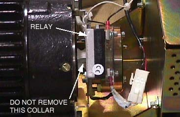
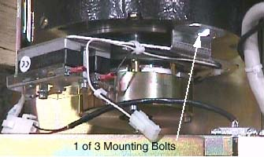

Operating Documentation
Direction 5114043-800, Rev# 9
LightSpeed 3.X Service Methods (Advanced)
Operating Documentation |
| Required Persons | Preliminary Reqs | Procedure | Finalization |
|---|---|---|---|
| 1 | Timing Not Applicable |
| Last Revised: | November 2004 |
| Item | Qty | Effectivity | Part# | Manufacturer | |
|---|---|---|---|---|---|
| Standard FE Tool Kit | 1 | - | - | - | |
| Item | Qty | Effectivity | Part# | Manufacturer |
|---|---|---|---|---|
| Tie-wraps | - | - | - | |
| Hand towels (for cleanup) | - | - | - |
| Item | Qty | Effectivity | Part# | Manufacturer | |
|---|---|---|---|---|---|
| Axial Drive Holding Brake | 1 | - | - | - | |
| ELECTROCUTION HAZARD | |
| HIGH VOLTAGES PRESENT. | |
| Use proper lockout/tagout procedures before replacing components. See safety menu of Service Document gui for appropriate procedures. |
| CRUSH HAZARD. | |
| UNEXPECTED GANTRY ROTATION CAN CAUSE SERIOUS INJURY. | |
| Never service the gantry with the axial drive enabled. Use the gantry rotation lock to lock out gantry rotation. |
| Follow ALL required safety and PPE procedures customary for your organization, when working on this product. | |
| NOTE: | Some steps may require service in blind areas. |
| Condition | Reference | Eff |
|---|---|---|
Only trained service personnel should service the GE CT Scanner. | - | - |
Gantry tilt, if possible. May aid in this replacement process. | - | - |
Gantry rotated to a position that offers the best service access, before turning off gantry 120/ 208 VAC. | - | - |
Motor removal may make the replacement process easier. Tool required to remove motor. | - | - |
Remove gantry covers as required.
Refer to Parts Replacement → Gantry → Enclosure → (Cover Removal Procedure).
| ELECTROCUTION HAZARD | |
| HIGH VOLTAGES PRESENT. | |
| Use proper lockout/tagout procedures before replacing components. See safety menu of Service Document gui for appropriate procedures. |
Turn off all three (3) gantry service switches (Axial Drive, HVDC, 120VAC) and perform Lockout/Tagout procedures.
| CRUSH HAZARD. | |
| UNEXPECTED GANTRY ROTATION CAN CAUSE SERIOUS INJURY. | |
| Never service the gantry with the axial drive enabled. Use the gantry rotation lock to lock out gantry rotation. |
Engage indexer lock to prevent unexpected gantry rotation.
Disconnect 2 MOLEX connections to holding brake relay.
Illustration 1: Axial Holding Brake Relay

| NOTE: | It may be necessary to remove the Axial drive module for easier access. If you need to remove the Axial drive module refer to Axial Drive Module replacement for instructions. |
Remove three (3) bolts that secure BRAKE motor to MOTOR.
Illustration 2: Axial Holding brake

Slide assembly off shaft.
Check the collar alignment on the NEW Holding Brake before installing on motor shaft. The hexagonal opening should be centered to insure there are no grinding noises from the brake when in operation.
| SEVERE INJURY OR DEATH CAN RESULT. | |
| 120 VAC IS PRESENT AT HOLDING BRAKE RELAY. | |
| Disable Gantry 120 VAC prior to servicing Holding brake. |
Connect two (2) Molex connectors to new Holding Brake while it is not attached to the motor shaft. This will release the brake.
Center the Hexagonal opening with respect to the circular shaft opening.
Remove the two (2) Molex connections. The brake will engage when power is remove.
Install new brake.
Reassemble gantry.
Perform Axial Brake Check located in Axial Motion Checks.
Exercise alignment lights, and acquire several 1 second scans.